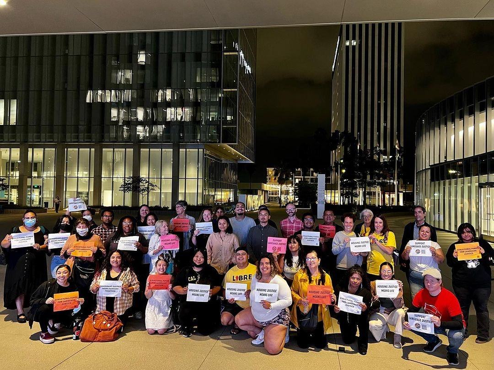

Budget campaigns
Right to Counsel
Since 2020, the Housing Justice Coalition has joined hands with Stay Housed LA to implement a county-wide Tenants Right to Counsel program that supports renters facing eviction and other threats to their housing security.
From July 2023 to December 2024, Stay Housed LA provided free legal representation to 142 tenants and limited legal services to an additional 525 tenants. Even more tenants were served through Tenant Know Your Rights workshops and community-based tenant navigation.
By pairing education with free legal representation, the program has helped families even the playing field with landlords, navigate a complex legal system, secure soft landings, and avoid displacement outcomes many would not have achieved through self-advocacy alone.
